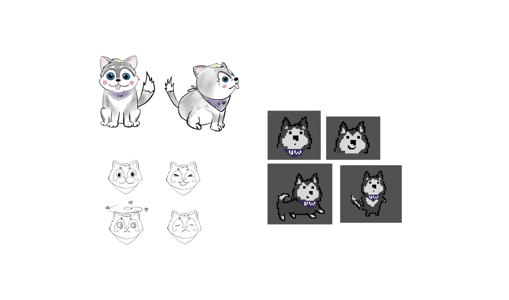
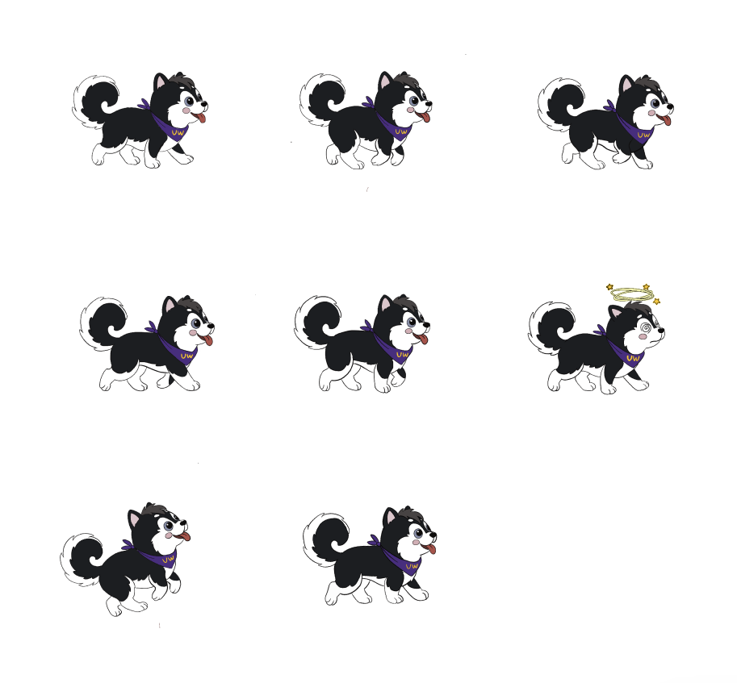
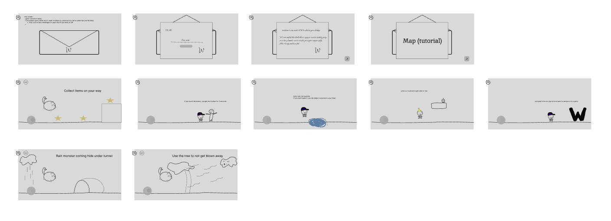

Husky Jump
The UW iSchool Alumni Team came to us with a problem: engagement was low, and they wanted a tighter-knit alumni community. Their brief was simple to state and open-ended to solve — build a fun, interactive game to send alumni on their birthdays, one that could move the needle on engagement, participation, and long-term involvement.
Collaborated with a cross-functional capstone team and stakeholders to define
project goals and develop a minimum viable product (MVP). Led the UI/UX design
and contributed to Unity development, creating intuitive gameplay mechanics and
visually engaging interfaces.
Applied mobile-first and user-centered design principles to ensure accessibility
and usability. Key considerations included personalization, inclusive
representation, strong visual contrast, and short session lengths of
approximately five minutes. Iterated on designs based on stakeholder feedback
and usability insights.
Design principles
Five things we kept coming back to while making decisions:
Engagement
Personalization and relevance increase engagement.
Retention
Visual design attracts users; gameplay supports retention.
Accessibility
Stronger contrast and clearer text.
Session length
Short sessions (~5 min) match user expectations.
Representation
Locations, items, and characters help users feel represented.
From Mario to Montlake
The first version of this was just a straightforward platformer — something in the spirit of Super Mario Bros, nostalgic enough to land with alumni across every age group. From there the concept got more specific: what if it felt like UW instead of a generic platformer world? The game split into 5 levels, each one a spot on campus every iSchool student knows and loves — with items and enemies pulled from that same world. On top of that, it became a timed run: how fast can you clear all 5 levels?
Character design
Early exploration — painted concept sketches, a line-art expression sheet, and a pixel-sprite test — versus the character that made it into the game: a consistent black-and-white husky in a UW bandana, with a full walk cycle.


Draft exploration → final in-game sprite
Early storyboard & mechanics
The original storyboard mapped out the whole flow: a birthday-invitation intro ("you're invited to come back to UW"), a personalized name entry, a short tutorial, then five levels of platforming. Touching an enemy or missing a puddle jump costs time — this is a speedrun, after all — while jumping up to out-of-the-way platforms reveals items or a nice view. Each level ends at a giant "W" sign marking the way back to campus. A couple of early hazard ideas made it in too: a rain monster you dodge by hiding under a tunnel, and wind gusts strong enough that you have to grab onto a tree to avoid getting blown away.
